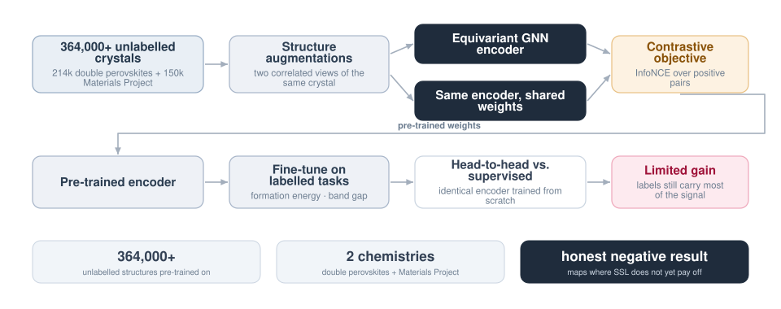

Does Contrastive Pre-Training Actually Help on Crystals?
Self-supervised learning transformed vision and language, and the obvious next question is whether it does the same for 3D crystal structures. Answering it properly meant pre-training equivariant GNN encoders on 364,000+ unlabelled structures and benchmarking them honestly against supervised baselines — including reporting the answer when it came back negative.

What was being tested
The premise of self-supervised learning is that unlabelled data is abundant and labels are expensive — which describes computational materials science exactly. If contrastive pre-training on hundreds of thousands of structures gave downstream property models a better starting point, it would change how the whole field allocates compute.
So the question was posed sharply: does pre-training on 364,000+ unlabelled structures provide a superior starting point for downstream property prediction compared with standard supervised training from scratch?
How it was set up
- Contrastive objectives for 3D equivariant representations, adapted so that the augmented views respect crystal symmetry rather than breaking it.
- Two chemistries, deliberately. 214,000 double perovskites and 150,000 Materials Project structures, so the result would not be an artefact of one narrow chemical space.
- GNN training scaled across HPC nodes to make datasets of this size tractable.
- Rigorous downstream benchmarking across multiple property tasks including formation energy and band gap, with the supervised baseline sharing the encoder architecture exactly.
The finding
Extensive downstream evaluation showed limited gains for pre-trained SSL models over supervised baselines in this domain. Labels still carry most of the usable signal, particularly in high-symmetry crystal systems where the augmentations have less structure to vary.
Why a negative result is worth publishing
A result like this maps a boundary. It tells the next person where SSL for materials does not currently pay off, which saves them the compute of finding out — and it points at the more interesting question of what augmentations or objectives would be needed before it does. Reporting it plainly, rather than searching for a framing where the numbers look better, is the part of research training I found most valuable here.